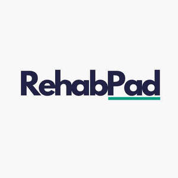

Trade Mark Journal No.2025/009 28 February 2025
UK00004162878 20 February 2025 (9,10,28,41,44)
Mark 1
RehabPad
Mark 2

- Class 9
- Software as a medical device [SaMD], downloadable; Sensors [measurement apparatus], other than for medical use; Monitoring apparatus, other than for medical purposes.
- Class 10
- Medical devices; Medical apparatus and devices; Medical diagnostic apparatus for medical purposes; Apparatus for medical rehabilitation; Apparatus for physical training for medical use; Body rehabilitation apparatus for medical purposes; Rehabilitation apparatus (Body -) for medical purposes; Physical exercise apparatus for therapeutic use; Apparatus for use in exercising muscles for medical use; Physical exercise apparatus, for medical purposes; Physical exercise apparatus for medical purposes; Exercise equipment for medical rehabilitative purposes; Exercise apparatus for medical rehabilitative purposes; Exercising apparatus for medical rehabilitative purposes; Apparatus for use in toning muscles for medical rehabilitation; Physical exercise machines for medical purposes; Computer controlled exercise apparatus for therapeutic use; Apparatus for the therapeutic toning of the muscles.
- Class 28
- Body training apparatus [exercise]; Manually operated exercise equipment; Strength training apparatus; Body-building apparatus [exercise]; Exercise platforms; Body toner apparatus [exercise]; Apparatus for achieving physical fitness [for non-medical use].
- Class 41
- Services for the provision of exercise equipment; Exercise instruction; Exercise [fitness] advisory services; Provision of instruction relating to exercise; Providing instruction and equipment in the field of physical exercise; Physical fitness instruction; Health and fitness training.
- Class 44
- Remote monitoring of medical data for medical diagnosis and treatment.
Richard Waterworth